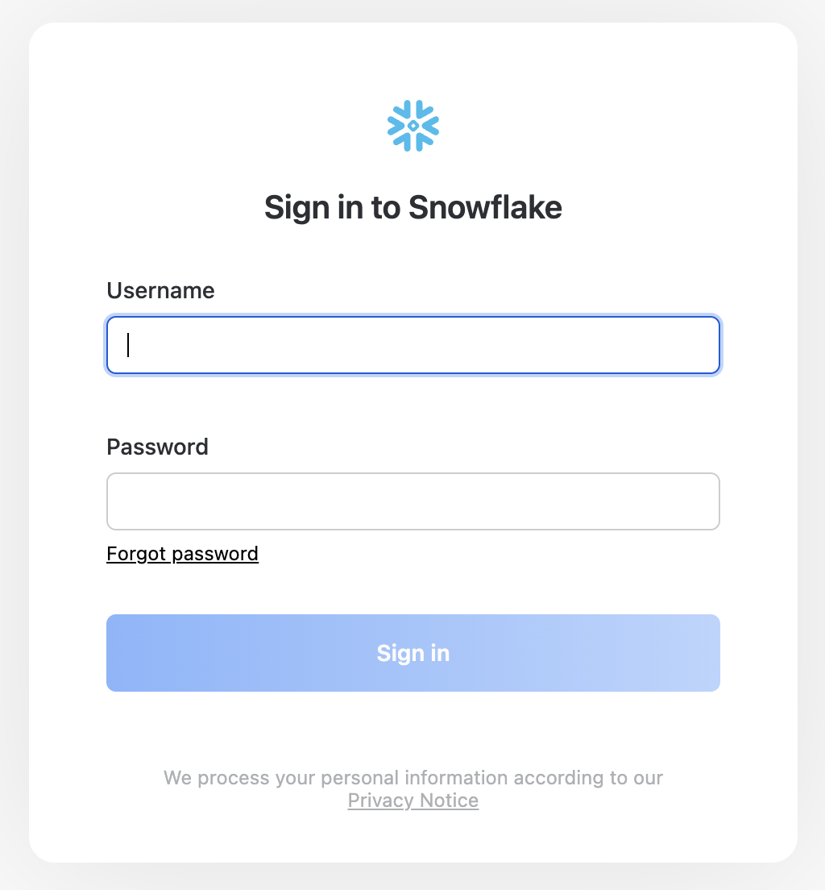
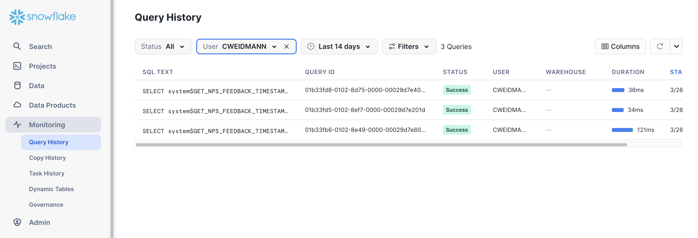
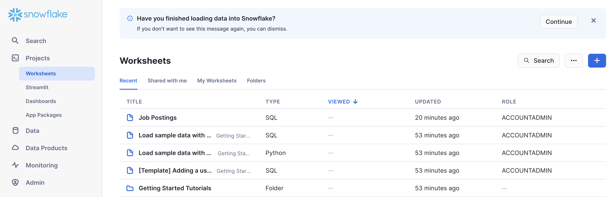
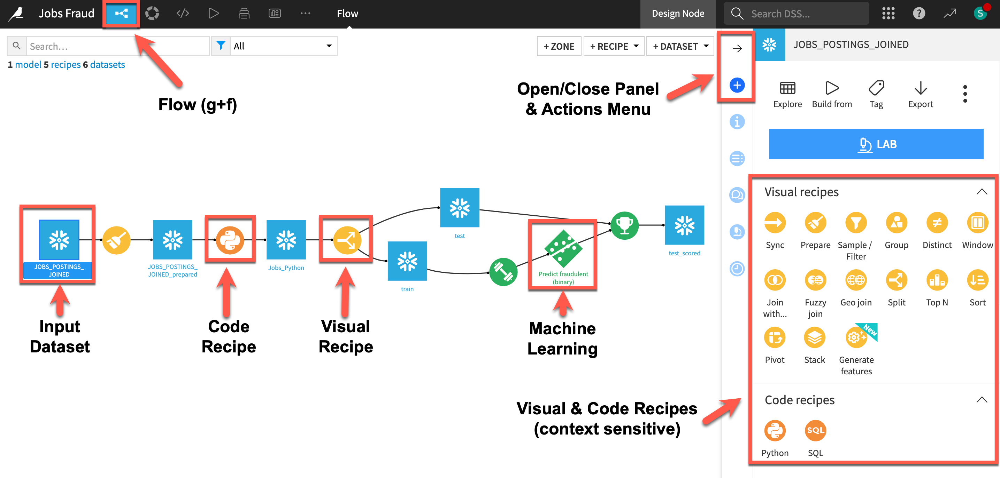
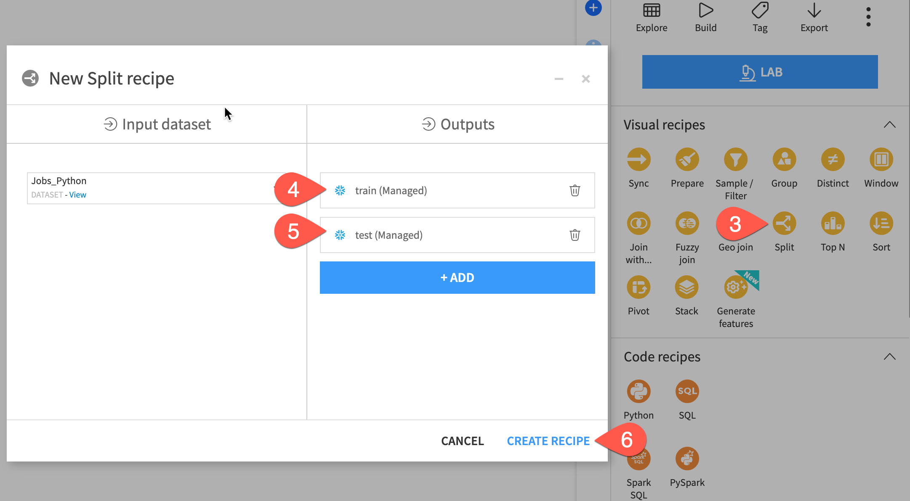
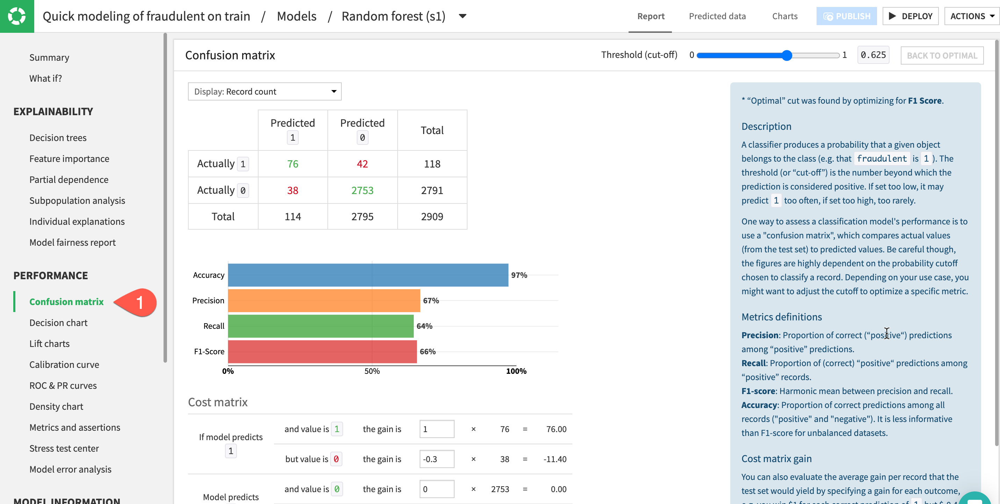
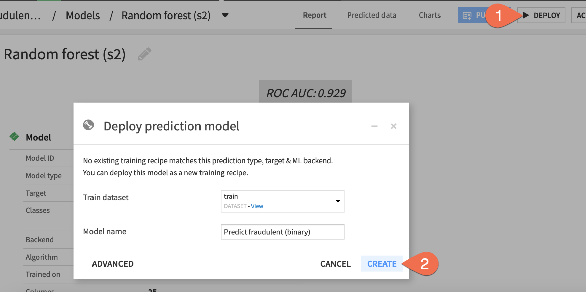

This Snowflake Quickstart introduces you to the basics of using Snowflake together with Dataiku Cloud as part of a Data Science project. We'll be highlighting some of the well-integrated functionalities between the two technologies. It is designed specifically for use with the Snowflake free 30-day trial, and the Dataiku Cloud free trial version via Snowflake's Partner Connect.
The Use Case: Recent advances in generative AI have made it easy to apply for jobs. But be careful! Scammers have also been known to create fake job applications in the hopes of stealing personal information. Let's see if you — with Dataiku & Snowflake's help — can spot a real job posting from a fake one!
Prerequisites
- Use of the Snowflake free 30-day trial environment
- Basic knowledge of SQL, and database concepts and objects
What You'll Learn
The exercises in this lab will walk you through the steps to:
- Create databases, tables, views, and warehouses in Snowflake
- Use Snowflake's "Partner Connect" to seamlessly create a Dataiku DSS Cloud trial
- Create a Data Science project in Dataiku and perform analysis on data via Dataiku within Snowflake
- Use both visual and code tools
- Create, run, and evaluate simple Machine Learning models in Dataiku
- How at each step of the data science process you can utilise Dataiku and Snowflake in tandem to accelerate your team
What We're Going To Build
We will build a project that uses input datasets from Snowflake. We'll build a data science pipeline by applying data transformations, building a machine learning model, and deploying it to Dataiku's Flow. We will then see how you can score the model against fresh data from Snowflake and automate.
- If you haven't already, register for a Snowflake free 30-day trial The rest of the sections in this lab assume you are using a new Snowflake account created by registering for a trial.
- Region - Although not a requirement we'd suggest you select the region that is physically closest to you for this lab
- Cloud Provider - Although not a requirement we'd suggest you select
AWSfor this lab - Snowflake edition - We suggest you select select the
Enterprise editionso you can leverage some advanced capabilities that are not available in the Standard Edition.
After activation, you will create a usernameand password. Write down these credentials. Bookmark this URL for easy, future access.
Logging Into the Snowflake User Interface (UI)
Open a browser window and enter the URL of your Snowflake 30-day trial environment. You should see the login screen below. Enter your unique credentials to log in.

Close any Welcome Boxes and Tutorials
You may see "welcome" and "helper" boxes in the UI when you log in for the first time. Close them by clicking on Skip for now in the bottom right corner in the screenshot below.

Navigating the Snowflke UI
First let's get you acquainted with Snowflake! This section covers the basic components of the user interface to help you orient yourself. We will move left to right in the top of the UI.
The main menu on the left allows you to switch between the different areas of Snowflake:

The Databases tab shows information about the databases you have created or have privileges to access. You can create, clone, drop, or transfer ownership of databases as well as load data (limited) in the UI. Notice several databases already exist in your environment. However, we will not be using these in this lab.

The Worksheets tab provides an interface for submitting code queries, performing DDL and DML operations and viewing results as your queries/operations complete.
In the left pane is the database objects browser which enables users to explore all databases, schemas, tables, and views accessible by the role selected for a worksheet. The bottom pane will show results of queries and operations.
If this is the first time you've used Snowsight, you might be prompted to enable it.


As you can see, there have already some worksheets been prepared for you to work with the demo data in the databases that we saw before. However, we are not going to use these existing worksheets now.
Instead, we are going to create a new one. For that, please click on the blue + Button in the top right corner.

Select SQL Worksheet from the menu and a new worksheet will be created and shown.

Rename the newly created worksheet to Job Postings by clicking on the worksheet name and typing Job Postings and pressing ‘Enter'

The History tab allows you to view the details of all queries executed in the last 14 days in the Snowflake account (click on a Query ID to drill into the query for more detail).

If you click on the bottom left of the UI where your username appears, you will see that you can change your password, roles, or preferences. Snowflake has several system defined roles. You are currently in the default role of SYSADMIN. We will change this in the next part of the lab.

Create Dataiku trial via Partner Connect
At the top right of the page, confirm that your current role is ACCOUNTADMIN, by clicking on your profile on the top right.
- Click on
Data Productson the left-hand menu - Click on
Partner Connect - Search for Dataiku
- Click on the
Dataikutile

This will automatically create the connection parameters required for Dataiku to connect to Snowflake. Snowflake will create a dedicated database, warehouse, system user, system password and system role, with the intention of those being used by the Dataiku account.
For this lab we'd like to use the PC_DATAIKU_USER to connect from Dataiku to Snowflake, and use the PC_DATAIKU_WH when performing activities within Dataiku that are pushed down into Snowflake.
This is to show that a Data Science team working on Dataiku and by extension on Snowflake can work completely independently from the Data Engineering team that works on loading data into Snowflake using different roles and warehouses.

Note that the user password (which is autogenerated by Snowflake and never displayed), along with all of the other Snowflake connection parameters, are passed to the Dataiku server so that they will automatically be used for the Dataiku connection for this lab. DO NOT CHANGE THESE.
- Click
Connect - You will get a pop-ip which tells you your partner account has been created. Click on
Activate
This will launch a new page that will redirect you to a launch page from Dataiku.
Here, you will have two options:
- Login with an existing Dataiku username
- Sign up for a new Dataiku account
We assume that you're new to Dataiku, so ensure the "Sign Up" box is selected, and sign up with either GitHub, Google or your email address and your new password. Click sign up.

When using your email address, ensure your password fits the following criteria:
- At least 8 characters in length
- Should contain: Lower case letters (a-z) Upper case letters (A-Z) Numbers (i.e. 0-9)
You should have received an email from Dataiku to the email you have signed up with. Activate your Dataiku account via the email sent.
Review Dataiku Setup
Upon clicking on the activation link, please briefly review the Terms of Service of Dataiku Cloud. In order to do so, please scroll down to the bottom of the page. Click on I AGREE and then click on NEXT

Complete your sign up some information about yourself and then click on Start.
You will be redirected to the Dataiku Cloud Launchpad site. Click GOT IT! to continue.

This is the Cloud administration console where you can perform tasks such as inviting other users to collaborate, add plugin extensions, install industry solutions to accelerate projects as well as access community and academy resources to help your learning journey.
It's beyond the scope of this course to cover these but for this lab we would like to enable a few of the AI Assistants so lets do that now.
- Click on
Extensionson the left menu - Select
+ ADD AN EXTENSION - Find
AI Servicesand click on it
In the AI Services Extension screen perform the following tasks:
- Agree to the terms and services
- Select
Enable AI Prepare - Select
Enable AI Explain - Click
ADD - Click on
Go Back To Space

You've now successfully set up your Dataiku trial account via Snowflake's Partner Connect. We are now ready to continue with the lab. For this, move back to your Snowflake browser.
Analysing the data using Snowsight
Now that we've done some preparation work, let's do some primarily data analysis on our data. For this we will use Snowsight, the SQL Worksheets replacement, which is designed to support data analyst activities.
Snowflake recently released the next generation of it's analytics UI — Snowsight. On top of a redesigned interface, there are many improvements for analysts, data engineers, and business users. With Snowsight, it is easier and faster to write queries and get results and collaboration with others through sharing makes it easier to explore and visualize data across your organization. Snowsight includes many features and enhancements, including:
- Fast query writing: Includes smart autocomplete for query syntax keywords or listing values that match table/column names, data filters and quick access to Snowflake documentation for specific functions.
- Interactive query results: View summary statistics about the data that has been returned by their query, using histograms of the distribution to identify outliers and anomalies.
- Attractive data visualizations: Quickly analyze data without requiring an external analytics/visualization tool, with automatic chart generation and drag-and-drop interface for creating dashboards.
- Sharing and collaboration: Share queries, worksheets, visualizations and dashboards securely among teams.
- Schema browser: Search instantly across databases and schemas accessible by the current session role for tables, views, and columns whose names contain a specified string. Pin tables for quick reference to see column names and data types.
For more information on using Snowsight, see the documentation.
Let's run some preliminary analysis on the two tables that we'll focus on. For this, we will select Worksheets under Projects in the top left corner.

Data Problem
Sometimes you go through the entire process of building a predictive model and the predictions are quite poor and you trace the issue back to data problems. In other cases, such as this one, the data changes with time and the models go bad.
Preparing the Data for Further Data Analysis and Consumption
Step 1 - Create Schema and Tables
Now let's create the datastructuresa into which we are going to load the data. We will be using the database that was created when connecting to Dataiku - PC_DATAIKU_DB
Copy the statements below into your worksheet and run them there.
use warehouse PC_DATAIKU_WH;
use database PC_DATAIKU_DB;
create or replace schema RAW;
use schema RAW;
create or replace table EARNINGS_BY_EDUCATION (
EDUCATION_LEVEL varchar(100),
MEDIAN_WEEKLY_EARNINGS_USD decimal(10,2)
);
create or replace table JOB_POSTINGS (
JOB_ID int,
TITLE varchar(200),
LOCATION varchar(200),
DEPARTMENT varchar(200),
SALARY_RANGE varchar(20),
COMPANY_PROFILE varchar(20000),
DESCRIPTION varchar(20000),
REQUIREMENTS varchar(20000),
BENEFITS varchar(20000),
TELECOMMUNTING int,
HAS_COMPANY_LOGO int,
HAS_QUESTIONS int,
EMPLOYMENT_TYPE varchar(200),
REQUIRED_EXPERIENCE varchar(200),
REQUIRED_EDUCATION varchar(200),
INDUSTRY varchar(200),
FUNCTION varchar(200),
FRAUDULENT int
);
Step 2 - Load Data
The data we want to use is available as csv files. Hence we define a csv file format to make our lives easier
create or replace file format csvformat
type = csv
field_delimiter =','
field_optionally_enclosed_by = '"',
skip_header=1;
As we have stored the data we want to load on an external S3 bucket, we need to create an external stage to load that data and also a stage for Dataiku to push Snowpark UDFs to.
CREATE OR REPLACE STAGE JOB_DATA
file_format = csvformat
url='s3://dataiku-snowflake-labs/data';
CREATE or REPLACE STAGE DATAIKU_DEFAULT_STAGE;
---- List the files in the stage
list @JOB_DATA;
With that all set, we are ready to load the data.
copy into EARNINGS_BY_EDUCATION
from @JOB_DATA/earnings_by_education.csv
on_error='continue';
copy into JOB_POSTINGS
from @JOB_DATA/job_postings.csv
on_error='continue';
Let's a quick look at the data
select * from RAW.EARNINGS_BY_EDUCATION limit 10;

select * from RAW.JOB_POSTINGS limit 10;

Step 3 - Prepare Data for Analytics with Dataiku
With the data loaded into our raw stage, we want to prepare a table that joins the two sources into one, which we will then use in our workflow in Dataiku.
Let's start by switching to the Public schema as the Dataiku connection created from Partner Connect has permissions on that.
use schema PUBLIC;
And now on to the new table
create or replace table JOBS_POSTINGS_JOINED as
select
j.JOB_ID as JOB_ID,
j.TITLE as TITLE,
j.LOCATION as LOCATION,
j.DEPARTMENT as DEPARTMENT,
j.SALARY_RANGE as SALARY_RANGE,
e.MEDIAN_WEEKLY_EARNINGS_USD as MEDIAN_WEEKLY_EARNINGS_USD,
j.COMPANY_PROFILE as COMPANY_PROFILE,
j.DESCRIPTION as DESCRIPTION,
j.REQUIREMENTS as REQUIREMENTS,
j.BENEFITS as BENEFITS,
j.TELECOMMUNTING as TELECOMMUTING,
j.HAS_COMPANY_LOGO as HAS_COMPANY_LOGO,
j.HAS_QUESTIONS as HAS_QUESTIONS,
j.EMPLOYMENT_TYPE as EMPLOYMENT_TYPE,
j.REQUIRED_EXPERIENCE as REQUIRED_EXPERIENCE,
j.REQUIRED_EDUCATION as REQUIRED_EDUCATION,
j.INDUSTRY as INDUSTRY,
j.FUNCTION as FUNCTION,
j.FRAUDULENT as FRAUDULENT
from RAW.JOB_POSTINGS j left join RAW.EARNINGS_BY_EDUCATION e on j.REQUIRED_EDUCATION = e.EDUCATION_LEVEL;
Your data should now look like this
select * from PUBLIC.JOB_POSTINGS_JOINED;

Step 4 - Grant Dataiku Access to Data
As a last step before heading over to Dataiku, we need to make sure that it can read the data we just loaded and joined. (Note: You wouldn't typically grant ALL like this but we are in isolated trial accounts)
grant ALL on all schemas in database PC_DATAIKU_DB to role PC_Dataiku_role;
grant ALL privileges on database PC_DATAIKU_DB to role PC_Dataiku_role;
grant ALL on all stages in database PC_DATAIKU_DB to role PC_Dataiku_role;
During or after this lab you should NOT do the following without good reason or you may burn through your $400 of free credits more quickly than desired:
- Disable auto-suspend. If auto-suspend is disabled, your warehouses will continue to run and consume credits even when not being utilized.
- Use a warehouse size that is excessive given the workload. The larger the warehouse, the more credits are consumed.
We are going to use the virtual warehouse PC_DATAIKU_WH for our Dataiku work. However, we are first going to slightly increase the size of the warehouse to increase the compute power it contains.
On the top right corner of your worksheet, click on the warehouse name. In the dialog, click on the three lines on the top right to get to the details page of the warehouses. There, change the size of the PC_DATAIKU_WH data warehouse from X-Small to Medium. Then click the "Finish" button.

Alternatively, you can also run the following command in the worksheet:
alter warehouse PC_DATAIKU_WH set warehouse_size=MEDIUM;
For this module, we will login into the Dataiku hosted trial account and create a Dataiku project.
Here is the project we are going to build along with some annotations to help you understand some key concepts in Dataiku.

- A dataset is represented by a blue square with a symbol that depicts the dataset type or connection. The initial datasets (also known as input datasets) are found on the left of the Flow. In this project, the input dataset will be the one we created in the first part of the lab.
- A recipe in Dataiku DSS (represented by a circle icon with a symbol that depicts its function) can be either visual or code-based, and it contains the processing logic for transforming datasets.
- Machine learning processes are represented by green icons.
- The Actions Menu is shown on the right pane and is context sensitive.
- Whatever screen you are currently in you can always return to the main Flow by clicking the Flow symbol from the top menu (also clicking the project name will take you back to the main Project page).
Creating a Dataiku Project
Go back to your Dataiku Cloud instance landing page.
- Ensure you are on the
Overviewpage - Click on
OPEN INSTANCEto get started.

Congratulations you are now using the Dataiku platform! For the remainder of this lab we will be working from this environment which is called the design node, its the pre-production environment where teams collaborate to build data products.
Now lets create our first project. There are lots of existing options and accelerators available to us but for this lab we will start with a blank project.
- Click on the
+ NEW Projectbutton on the right hand side - Select
Blank Project - Give your project a name such as
Jobs Fraud - Click on
Create

Success! You've now created a dataiku project.
Click on Got it! to minimize the pop-up on Navigation and help in DSS and return to the project home screen.
Review the Dataiku DSS page. There are a few things to note from the project landing page on an example project:
- The project name, image associated with the project, collaborators, and optional tags:
- The number and types of objects in the project.
- A description of the project written in markdown, can link specific Dataiku objects (e.g., datasets, saved models, etc.) in the description:
- Summary of project (history is saved in a git log) as well as a Chat function for better collaboration:
Import Datasets
Import the dataset from Snowflake
Click on +IMPORT YOUR FIRST DATASET
Under SQL, select Snowflake

1.To load the table, select the connection that was just created for us from Partner Connect. In the Table section select Get Tables List. Dataiku will warn you that this may be long list but we can OK this.
- Search for and select the
JOBS_POSTINGS_JOINEDtable we just created in Snowflake. - Then click
TEST TABLEto test the connection - If successful set the
New dataset name(top right) toJOBS_POSTINGS_JOINEDand click onCREATE.

Return to the flow by clicking on the flow icon in the top left (keyboard shortcut g+f)

Double click on the JOBS_POSTINGS_JOINED dataset
The JOBS_POSTINGS_JOINED table contains data on a location and day basis about the number and types of cases (Active, Confirmed, Deaths, Recovered) that day.
Dataiku reads a sample of 10000 rows by default. The sampling method can be changed under Configure Sample but for this lab we can leave it as the default:
Dataiku automatically detects data type and meaning of each column. The status bar shows how much of the data is valid (green), invalid (red), and missing (grey). You can view column Stats (data quality, distributions) by clicking Quick Column Stats button on the right:
Click the close button when you are finished
After exploring our data we are going to perform some transformation steps to clean the data and generate new features.
Dataiku terms these transformation steps as Recipes and they may be visual (UI) or code based (a variety of editors, notebooks and IDE's are available).
Lets start with a visual recipe called the Prepare recipe. You can think of this recipe like a toolbox with lots of different tools for a variety of data transformation tasks. You build a series of transformation steps and check their effect on a sample of the data before pushing them to the full dataset.
- Select your dataset from the flow (remember you can use the
g+fkeyboard shortcut) - After highlighting the dataset by clicking on it once go to the right hand actions menu select the
Preparerecipe from the Visual Recipes list - You can leave the defaults and click on
CREATE RECIPE

Location Column
Looking at our data we can see the location column has a lot of information contained within it that could make useful features for our model however in its current comma separated string format it is not that useful. Lets use the Split processor to pull out the location information into their own columns.
- Click on the
+ ADD A NEW STEPbutton on the left - You can use the search window to find the split processor
- Select the
Split Columnprocessor.

A new step is added to script on the left. We now need to populate the fields so Dataiku knows how we'd like to apply the split.
- For the column we want to enter
location - It's comma separated so the delimiter will be
, - We can leave the prefix as the default
- Select the
Truncateoption - Since there are three comma separated location values change the columns to keep to
3 - As you fill in the values you can see the effects live in the blue columns which is a great way of understanding the impact of the changes you are making and if it is the desired outcome.

Splitting the column was useful but lets make the column names a little more human readable. We can use the rename processor for this. Select the Rename processor just like you did for Split and then click on +Add Renaming and rename location_0 to country. Repeat for location_1 and location_2 changing them to state and city respectively. The step should look like this

Text Columns
Next we have a number of text columns. When building a machine learning model there are a number of techniques we can use to work with text data, we are going to simplify the text and use the Normalise feature which transforms to lowercase, removes punctuation and accents and performs Unicode NFD normalization (Café -> cafe).
We could search for the processor we want and configure it like before but since we are new to Dataiku lets use the AI Prepare assistant to help us out this time. We can describe the steps we want and allow the AI Assistant to look through the 100+ processors and configure them to our requirements.
- Click on
AI PREPAREbutton on the left side of the screen - In the text box paste in the following prompt and then click on
GENERATE
normalize text for the columns COMPANY_PROFILE, DESCRIPTION, REQUIREMENTS, BENEFITS.
dont create a new column, update in place
The AI Assitant generates the 4 steps for us and documents them to make the results are easy to review for everyone using the data preparation job
Now we have normalized the text in those columns we might consider creating a new feature based on the length. Our theory might be that scammers will focus on the salary and buzzwords to get people to apply and are less likely to populate the job description and company background.
Again if we know the processor we want we can just search and use it directly. In our case as we're new to Dataiku let's use the AI Prepare assistant to help us out.
- Click on
AI PREPAREbutton on the left side of the screen - In the text box paste in the following prompt and then click on
GENERATE
calculate the length of the columns COMPANY_PROFILE, DESCRIPTION, REQUIREMENTS, BENEFITS.
write them to new columns with the prefix LENGTH_
If your script now matches the below screenshot go ahead and click on the green RUN button at the bottom of the script.

In addition to a wide number of visual tools to enable to the low/no coder Dataiku also provides rich and familiar toolsets and language support for coders.
In this section we will put ourselves in the shoes of a data scientist that is collaborating on the project. Whilst they can get value from tools like the Prepare recipe they may be looking for full code experience so in this section we will use the built-in support in Dataiku for notebooks and IDE's
Lets use a Jupyter notebook to create a Snowpark for Python function to extract the minimum salary range
When using Dataiku's SaaS option from Partner Connect the setup is done for us automatically and we checked that in our earlier lab where we set up the AI Services. If for any reason you skipped that step earlier then return to your browser tab with Dataiku Launchpad open (if you have shut this just go to Launchpad and check that Snowpark is enabled under the Extensions

Snowpark code
Lets create our Python code recipe:
- From the flow select the output dataset from our prepare recipe and then from the actions menu on the right select
Pythonfrom the code recipes section. - In the
Outputssection click+ ADD - Let's name our new output dataset
Jobs_Python - Click
Create Dataset - Click
CREATE RECIPE

We need to set a code environment that has the correct packages in. Fortunately that has been created for us, we just need to select it for this recipe.
- Click on the
Advancedtab at the top of the screen - Under the Python Env. section change the
Selection behaviourtoSelect an environment - In the
Environmentdrop down select thesnowparkcode environment. - Click
Save - Select
Codetab to return to the main editor

In addition to selecting an appropriate code environment there are just a couple of extra lines of code to add to your DSS recipe to start using Snowpark for Python
Helpfully we can use one of the many code samples available to us.
- Delete the automatically generated python starter code
- Click on the
{CODE SAMPLES}button - Search for Snowpark
- Select the
Read and write datasets with Snowparkoption - Click
+ INSERT

You now have some starter Snowpark code with the correct input and output dataset names.
We could carry on using the default code editor if we wish but we also have the option to use notebooks or IDE's so lets go ahead and use the in-built Jupyter notebook for the next part.
- Click on
EDIT IN NOTEBOOKoption in the top-right. We are going to use the Dataiku package and some Snowpark functions so lets add that now and feel free to separate into cells if you wish. Add the following two lines at the start of your code:
#add these two lines at the start of your code
import dataiku
from snowflake.snowpark.functions import *
Now lets take a simple example of feature engineering in code. Delete the section that reads:
# TODO: Replace this part by your actual code that computes the output, as a Snowpark dataframe
# For this sample code, simply copy input to output
output_dataset_df = input_dataset_df
Lets replace that deleted section with our Snowpark for Python code to generate a new feature called min_salary
#strip minimum salary from the given range
output_dataset_df = input_dataset_df.withColumn('"MIN_SALARY"', split(col('"SALARY_RANGE"'), lit('-'))[0])
Your code should now look similar to this (don't worry if you haven't separated your code into cells)

- Run your cell(s) to make sure your code is correct
- Click the
SAVE BACK TO RECIPEbutton near the top of the screen - From the default code editor click
RUN
One advantage of an end-to-end platform like Dataiku is that data preparation can be done in the same tool as machine learning. For example, before building a model, you may wish to create a holdout set. Let's do this with a visual recipe.
Steps
- From the Flow, click the
Jobs_Pythondataset once to select it. - Open the Actions tab on the right.
- Select the Split recipe from the menu of visual recipes.
- Click
+ Add; name the outputtrain; and click Create Dataset. - Click
+ Addagain; name the second outputtest; and click Create Dataset. - Once you have defined both output datasets, click
Create Recipe.

Define a split method
On the Splitting step of the recipe, choose Dispatch percentiles of sorted data as the splitting method.
- Set to sort according to
JOB_ID - Set the ratio of 80 % to the
traindataset, and the remaining 20% to thetestdataset. - Click the green Run at the bottom left to build these two output datasets.

When the job finishes, navigate back to the Flow (g + f) to see your progress.
The first step is to define the basic parameters of the machine learning task at hand.
- Select the train dataset.
- In the Actions tab, click on the Lab button. Alternatively, navigate to the Lab tab of the right side panel (shown below).
- Among the menu of visual ML tasks, choose AutoML Prediction.

Now you just need to choose the target variable and which kind of models you want to build.
- Choose
FRAUDULENTas the target variable on which to create the prediction model. - Click Create, keeping the default setting of Quick Prototypes.

Train models with the default design
Based on the characteristics of the input training data, Dataiku has automatically prepared the design of the model. But no models have been trained yet!
- Before adjusting the design, click Train to start a model training session.
- Click Train again to confirm.

Once your models have finished training, let's see how Dataiku did.
- While in the Result tab, click on the Random forest model in Session 1 on the left hand side of the screen to open a detailed model report.

Check Model Explainability - Feature Importance
One important aspect of a model is the ability to understand its predictions. The Explainability section of the report includes many tools for doing so.
- In the Explainability section on the left, click to open the
Feature importancepanel to see an estimate of the influence of a feature on the predictions.

Check Model Explainability - Confusion Matrix
A useful tool to evaluate and compare classification models is the confusion matrix. This compares the actual values of the target variable to our models predictions broken down into where the model got it right (true positives & true negatives) and where it got it wrong (false positives & false negatives).
- In the Performance section on the left, click to open the
Confusion Matrixpanel

Check Model Explainability - What If?
What if analyses can be a useful exercise to help both data scientists and business analysts get a sense for what a model will predict, given different input values. You can use the drop-down menus and sliders to adjust the values, type in your own, or even choose to ignore features to simulate a situation with missing values. On the right, you can review the new prediction based on your inputs.
- Click on the
What If?to open the panel.

Check Model Information
Alongside the results, you'll also want to be sure how exactly the model was trained.
- In the Model Information section, click to open the Features panel to check which features were included in the model, which were rejected (such as the text features), and how they were handled.
- When finished, at the top of the model report, click on Models to return to the Result home.

Thus far, Dataiku has produced quick prototypes. From these baseline models, you can work on iteratively adjusting the design, training new sessions of models, and evaluating the results.
- Switch to the
Designtab at the top center of the screen.

Tour the Design tab
From the Design tab, you have full control over the design of a model training session. Take a quick tour of the available options. Some examples include:
- In the
Train / Test Setpanel, you could apply a k-fold cross validation strategy. - In the
Feature reductionpanel, you could apply a reduction method like Principal Component Analysis. - In the
Algorithmspanel, you could select different machine learning algorithms or import custom Python models.

Reduce the number of features
Instead of adding complexity, let's simplify the model by including only the most important features. Having fewer features could hurt the model's predictive performance, but it may bring other benefits, such as greater interpretability, faster training times, and reduced maintenance costs.
- In the
Designtab, navigate to theFeatures handlingpanel on the left. - Click the box at the top left of the feature list to select all.
- For the role, click
Rejectto de-select all features. - Turn on the three most influential features according to the Feature importance chart seen earlier:
COUNTRY, HAS_COMPANY_LOGO, LENGTH_COMPANY_PROFILE.

Train a second session
Once you have just the top three features in the model design, you can kick off another training session.
- Click the blue
Trainbutton near the top right to start the next session. - Click
Trainonce more to confirm.

Up until now, the models you've trained are present only in the Lab, a space for experimental prototyping and analysis. You can't actually use any of these models until you have added them to the Flow, where your actual project pipeline of datasets and recipes lives. Let's do that now!
Choose a model to deploy
Many factors could impact the choice of which model to deploy. For many use cases, the model's performance is not the only deciding factor.
Compared to the larger model, the simple model with three features cost about 4 hundredths of a point in performance. For some use cases, this may be a huge amount, but in others it may be a bargain for a model that is more interpretable, cheaper to train, and easier to maintain. Since performance is not too important in this tutorial, let's choose the simpler option.
- From the Result tab, click the Random forest (s2) to open the model report of the simpler random forest model from Session 2.

Now you just need to deploy this model from the Lab to the Flow.
- Click
Deploynear the top right. - Click
Createto confirm.

Score Data
You now have two green objects in the Flow that you can use to generate predictions on new data: a training recipe and a saved model object.
- From the Flow single click on the diamond-shaped saved model to select it
- From the Actions menu select the
Scorerecipe - For the
Input Datasetselect thetestdataset - Click
CREATE RECIPE

- From the Score recipe you can leave the defaults but make sure that Snowflake Java UDF is selected as the engine. If it isn't click on the gear cog and select it. When you are done click
RUN

Inspect the scored data
Compare the schemas of the test and test_scored datasets.
- When the job finishes, click Explore dataset
test_scored. - Scroll to the right, and note the addition of three new columns:
proba_0, proba_1, and prediction. - Navigate back to the Flow to see the scored dataset in the pipeline.

Dataiku can generate explanations of project Flows. The feature leverages a Large Language Model (LLM) to do this.
- On the Flow screen open the Flow Actions menu
- Select Explain Flow
It is possible to adjust the generated explanations for language, purpose and length. Apply the following and then set the generated text as the project description.
- Language: English
- Purpose: Business
- Length: Medium

Snowflake recently released a collection of python APIs enabling efficient ML model development directly in Snowflake. You can, of course, use this library directly from Dataiku in a code recipe but we also provide a free to use plugin to provide a UI.
There are a few steps you need to take to install the plugin and prepare the data.
Install the plugin
- Return the Dataiku Cloud launchpad (https://launchpad-dku.app.dataiku.io)
- In the
Pluginssection select+ ADD A PLUGIN - Search for and install the Visual SnowparkML plugin
Data pre-processing
When using the plugin there are a few additional pre-processing steps necessary that we don't need to do when using Dataiku's standard Visual ML interface. Firstly we would need to make sure that all the column names are in uppercase but fortunately in our dataset that is already the case. Secondly we need to make sure that any columns of type int that have missing values are converted to doubles
- Click once on the
Jobs_Pythondataset in the flow to select it and then choose thePreparerecipe from the Actions menu, just like we did earlier in the lab - There are a number of columns of type
intwith missing values. Change these to doubles by clicking on the datatype under the column name and selecting it. - Click
RUN
SnowparkML Plugin
Now we have performed our preprocessing select the output dataset and then the plugin from the Actions menu (Note: You may need to scroll down to find the plugins, they are below the code and LLM recipes)
There are a number of output fields to fill:
- Set an output dataset name for the
Train Dataset Output - Set an output dataset name for the
Test Dataset Output - Set a name for
Model Folderwhere the MLflow experiment tracking data and trained models will be stored - Optionally you can set a folder for the final best model but we can leave this blank

Now we can set the details of our training run.
- Give the final model a name
- Set the target column to
Fraudulent - This is a
Two-class classificationproblem - The ratio can be set to
0.8for the standard 80/20 split and a random seed can also be set.
You can now set your Metrics, Features, Algos and more for your training session. Just click RUN at the bottom left when you are happy with your setup

Congratulations. You are using SnowparkML from a UI! You can explore your model from the MLflow green diamond in the Flow looking at explainability and performance measures, model comparisons and much more.
Congratulations on completing this introductory lab exercise! Congratulations! You've mastered the Snowflake basics and you've taken your first steps toward data cleansing, feature engineering and training machine learning models with Dataiku.
You have seen how Dataiku's deep integrations with Snowflake can allow teams with different skill sets get the most out of their data at every stage of the machine learning lifecycle.
We encourage you to continue with your free trial and continue to refine your models and by using some of the more advanced capabilities not covered in this lab.
What You Learned:
- How to create stages, databases, tables, views, and virtual warehouses.
- How to load structured and semi-structured data.
- How to perform analytical queries on data in Snowflake, including joins between tables.
- How to create a Dataiku trial account through Partner Connect
- How to use both Visual and Code Recipes to explore and transform data
- How to train, explore and understand a machine learning model
Related Resources
- Join the Snowflake Community
- Join the Dataiku Community
- Sign up for Snowflake University
- Join the Dataiku Academy